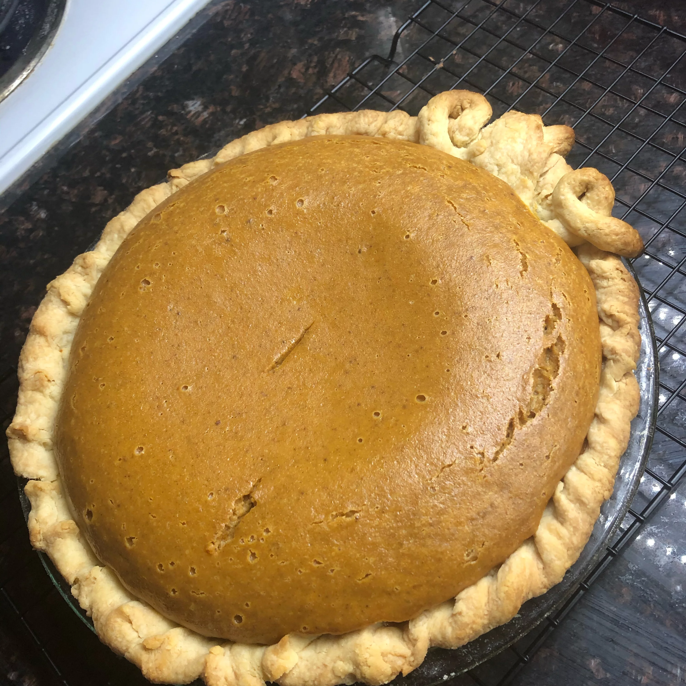

Perfect Pumpkin Pie by Eagle Brand

Description
Oh the Pumpkin Pie! A delicious dessert perfect for autumn. This pie will make your home smell amazing and give all your guests the feeling of home with each bite!
Ingredients
- 15 oz of cooked, mashed pumpkin
- 14 oz of condensed milk
- 2 large eggs
- 1 tsp ground cinnamon
- 1/2 tsp ground ginger
- 1/2 tsp ground nutmeg
- 1/2 tsp salt
- 1 9 inch pie crust
Steps
- Preheat oven to 425 F.
- Whisk pumpkin, condensed milk, eggs, spices, and salt in bowl until smooth. Pour into crust.
- Bake for 15 minutes.
- Reduce oven temperature to 350 F and bake for 35-40 more minutes, until knife stuck into pie 1 inch from edge comes out clean.
- Let cool and garnish with whipped creap if desired.